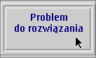

3. Operatory i wyra¿enia logiczne
Do zapisywania z³o¿onych warunków s³u¿± (m.in) warunkowe operatory logiczne:
Przypu¶cmy, ¿e chcemy sprawdziæ czy zachodzi warunek: wielko¶æ n znajduje
siê w przedziale [1, 10] - to znaczy, czy n jest wiêksze lub równe 1 i jednocze¶nie
mniejsze lub rowne 10.
Operator && daje warto¶æ true tylko wtedy, gdy oba jego argumenty s± warto¶ciami true, a warto¶æ false zawsze, gdy którykolwiek z argumentów jest false.
Operator || daje warto¶æ true zawsze, gdy którykolwiek z jego argumentów jest true i warto¶æ false tylko wtedy, gdy oba argumenty s± false
Operatory logiczne maj± ni¿szy priorytet od operatorów relacyjnych i równo¶ci-nierówno¶ci,
zatem bez u¿ycia dodatkowych nawiasów mo¿emy pisaæ np:
Uwaga: operator negacji logicznej ma wy¿szy priorytet ni¿ inne operatory
logiczne, wobec tego nale¿y u¿ywaæ nawiasów dla zapewnienia w³a¶ciwej kolejno¶ci obliczania warto¶ci wyra¿eñ
Sprawne pos³ugiwanie siê warunkami logicznymi wymaga podstawowej
wiedzy z zakresu logiki matematycznej. Warto wiêc siêgn±æ po jaki¶ prosty,
pocz±tkowy opis rachunku zdañ logicznych i przeczytaæ z niego kilka pierwszych
stron.
Nota bene, zadziwiaj±co czêsto mylone s± w programowaniu operacje koniunkcji i alternatywy logicznej. Zawsze wiêc - wybieraj±c operacjê do zastosowania - zastanówmy siê troszkê d³u¿ej nad tym czy ma to byæ koniukcja czy alernatywa Np. je¿eli chcemy wykonaæ jakie¶ czynno¶ci je¿eli nie zachodzi warunek: "³añcuch znakowy nie jest napisem "Ala" i - jednocze¶nie - zmienna lata ma warto¶æ wiêksz± od 1", to nie wolno nam napisaæ: if (! txt.equals("Ala") && lata > 1) ... bo to oznacza³oby konieczno¶æ równoczesnego spe³nienia dwóch warunków: - napis txt nie jest ala, - i lata s± wiêksze od 1 (a przecie¿ nie o to nam chodzi³o) Piszemy za to: if (!( txt.equals("Ala") && lata > 1)) ...
U¿ycie dodatkowych nawiasów zmienia kolejno¶æ opracowania wyra¿enia i uzyskujemy po¿±dany efekt. Zobaczmy to na przyk³adzie poni¿szego programu. Programista, który go napisa³ chcia³ osiagn±æ nastêpuj±cy efekt: zapytaæ w dialogach wej¶ciowych o nazwisko i imiê u¿ytkownika, je¶li podano obie informacje - wyprowadziæ po³±czone nazwisko i imiê, je¶li za¶ zabrak³o ktorej¶ z nich - wyprowadziæ napis "Niepe³na informacja"; nastêpnie pokazaæ dok³adnie co jest nazwiskiem (mo¿e byæ null) a co imieniem (te¿ mo¿e byæ null, je¶li nie wprowadzone). Pokusa zwiêz³ego napisania kodu sprawi³a, ¿e nasz programista siêgn±³ po po³±czenie warunków za pomoc± operatora &&: je¿eli wprowadzono nazwisko i wprowadzono imiê to txt = nazwisko + imie.
import javax.swing.*;
public class EfUb {
public static void main(String[] args) {
String nazwisko;
String imie = null;
String txt;
if ((nazwisko = JOptionPane.showInputDialog("Podaj nazwisko")) != null
&& (imie = JOptionPane.showInputDialog("Podaj imie")) != null
)
txt = nazwisko + " " + imie;
else txt = "Niepe³na informacja";
System.out.println(txt);
System.out.println("Imie :" + imie);
System.out.println("Nazwisko :" + nazwisko);
System.exit(0);
}
}
Jednak raczej wbrew intencjom programisty w tym programie mo¿e nie doj¶æ do zapytania o imiê (bowiem
warto¶æ pierwszego sk³adnika wyra¿enia po³±czonego koniunkcj± &&
mo¿e byæ false - je¶li przy pytaniu o nazwisko u¿ytkownik anulowa³ dialog).
Bezwarunkowe operatory logicznej koniunkcji (&) i alternatywy ( |) maj±
te same w³a¶ciwo¶ci co operatory && i || z jednym wyj±tkiem: oba
wyra¿enia-argumenty operatorów s± zawsze opracowywane (dlatego mówimy, ¿e
operatory s± bezwarunkowe). Dodatkowo, w¶ród logicznych operatorów bezwarunkowych, zdefiniowano
operator "wykluczaj±ce albo" (znak ^), który daje wynik true gdy warto¶ci obu argumentów operatora s± ró¿ne (czyli true i false lub false i true) oraz false w ka¿dym innym przypadku.
Operatory logiczne (bezwarunkowe) s± stosowane wy³±cznie wobec argumentow typu boolean. Generalnie wiêc: nie nale¿y mieszaæ w wyra¿eniach u¿ycia operatorów warunkowych i bezwarunkowych (ze wzglêdu na inny sposób dzia³ania oraz inne priorytety (por. tablicê priorytetów operatorów)). Dobr± regu³± "na pocz±tek" jest:
|
||||||||||||||||||||||||||||||||||